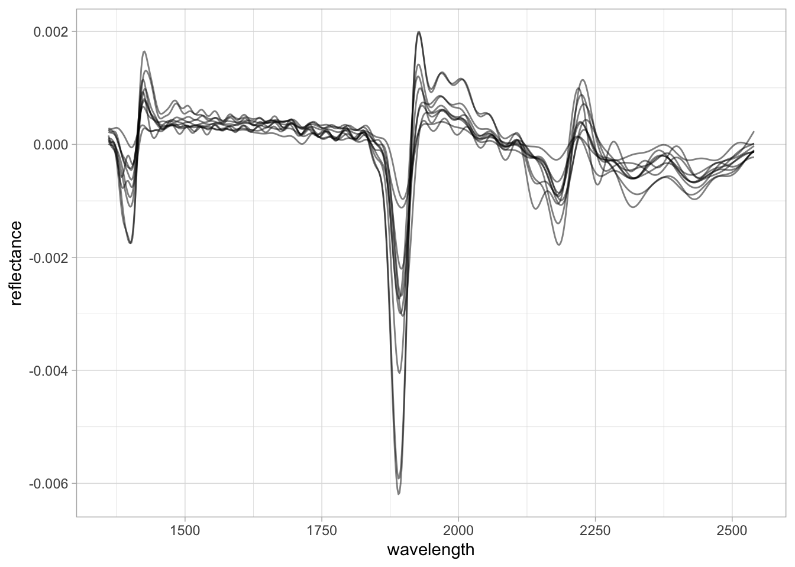

my.wd <- "~/projects/local-files/soilspec_training"
# Or within an RStudio project
# my.wd <- getwd()2 Processing
In this section of the training guide, we dive into the basic processing operations of soil spectroscopy data. This includes importing spectral data, making tabular and element-wise operations, visualization, resampling, and preprocessing.
You can set an external folder as your working directory and RStudio project, and copy/paste the code chunks of this session into plain R scripts.
Please, set the working directory (or create an RStudio project) in your local machine:
A list of all required packages for this section is provided in the following code chunk. You will see that some specific/special functions are highlighted in the text by linking back the function with the original package using the package::function() syntax:
library("tidyverse")
library("asdreader")
library("opusreader2")
library("prospectr")2.1 Importing spectra
At the beginning of a project, we need to import the spectral measurements as raw binary files (like ASD and OPUS files) or other text/data file formats that are commonly used across different software, for instance, a CSV file.
For learning some of the common operations of this part, let’s use some of the datasets shared through the Open Soil Spectral Library (OSSL). The OSSL has data for different spectral regions: visible and near-infrared [VisNIR, 350–2500 nm], near-infrared [NIR, 1350–2550 nm], and middle-infrared (MIR, 4000–600 cm-1).
A common raw format for VisNIR measurements is the .asd file. This format is used across the Malvern Panalytical instruments, like the ASD FieldSpec models. In R, we can import ASD files using the asdreader package. After downloading an example .asd file, we can use the function asdreader::get_spectra() by indicating the local file path. The imported spectra is a matrix with 1 row and 2551 columns, with column names as integer numbers (wavelength, nm) ranging from 350 to 2500 nm.
# Downloading an .asd file
visnir.spectra.url <- "https://github.com/soilspectroscopy/ossl-models/raw/main/sample-data/101453MD01.asd"
visnir.spectra.path <- file.path(my.wd, "file1.asd")
download.file(url = visnir.spectra.url,
destfile = visnir.spectra.path,
mode = "wb")
# Reading asd file
visnir.spectra <- asdreader::get_spectra(visnir.spectra.path)
# Inspecting the file
class(visnir.spectra)[1] "matrix" "array" dim(visnir.spectra)[1] 1 2151visnir.spectra[1,1:5] 350 351 352 353 354
0.09088564 0.09550782 0.09147028 0.08838938 0.08888854 # Spectral range
range(as.numeric(colnames(visnir.spectra)))[1] 350 2500The same operation can be done with MIR measurements. The OPUS file (.0) is a common binary file format used across the instruments of Bruker Optics GmbH & Co. According to the original producers of opusreader2:
(…) opusreader2 is a state-of-the-art [opus] binary reader. We recommend the package as a solid foundation for your spectroscopy workflow. It is modular and has no hard dependencies apart from base R. (…) The Bruker corporation manufactures reliable instruments but there is no official documentation of the OPUS file format.
As the OPUS format is proprietary, the open source community has reverse-engineered the binary files to be readable directly in R via opusreader2. After downloading an example .0 file from the OSSL project, we can use the function opusreader2::read_opus_single() by indicating the local file path. The imported spectra is a list with several items (metadata and spectral data), with the spectra having column names formatted as floating-point numbers (wavenumbers, cm-1) due to the Fourier transformation, ranging from 599.7663 to 7498.0428 cm-1.
# Downloading an .0 file
mir.spectra.url <- "https://github.com/soilspectroscopy/ossl-models/raw/main/sample-data/235157XS01.0"
mir.spectra.path <- file.path(my.wd, "file2.0")
download.file(url = mir.spectra.url,
destfile = mir.spectra.path,
mode = "wb")
# Reading opus file
mir.spectra <- opusreader2::read_opus_single(dsn = mir.spectra.path)
# Inspecting the file
class(mir.spectra)[1] "opusreader2" "list" names(mir.spectra) [1] "basic_metadata" "ab_data_param"
[3] "ab" "quant_report_ab"
[5] "sc_sample_data_param" "sc_sample"
[7] "ig_sample_data_param" "ig_sample"
[9] "sc_ref_data_param" "sc_ref"
[11] "ig_ref_data_param" "ig_ref"
[13] "optics" "optics_ref"
[15] "acquisition_ref" "fourier_transformation_ref"
[17] "fourier_transformation" "sample"
[19] "acquisition" "instrument_ref"
[21] "instrument" "lab_and_process_param_processed"
[23] "info_block" "history" # Spectra is stored in file$ab$data
class(mir.spectra$ab$data)[1] "matrix" "array" dim(mir.spectra$ab$data)[1] 1 3578# Spectral range
range(as.numeric(colnames(mir.spectra$ab$data)))[1] 599.7663 7498.0428In many cases, instead of importing the raw binary files, we can directly import a CSV exported from those spectral instruments and their accompanying software. For example, using an example CSV file exported from a Neospectra device that is also available through the OSSL project, the imported spectra is a table with scans in the rows, the first column as ID, and the spectra having column names formatted as floating-point numbers (wavelength, nm) due to the Fourier transformation, ranging in this case from 1350 to 2550 nm.
# Downloading a csv output from Neospectra
nir.spectra.url <- "https://github.com/soilspectroscopy/ossl-models/raw/main/sample-data/sample_neospectra_data.csv"
nir.spectra.path <- file.path(my.wd, "file3.csv")
download.file(url = nir.spectra.url,
destfile = nir.spectra.path,
mode = "wb")
# Reading csv file
nir.spectra <- readr::read_csv(nir.spectra.path)
# Inspecting the file
class(nir.spectra)[1] "spec_tbl_df" "tbl_df" "tbl" "data.frame" nir.spectra[1:5,1:5]# A tibble: 5 × 5
sample_id `2549.999982` `2541.176458` `2532.413785` `2523.711336`
<dbl> <dbl> <dbl> <dbl> <dbl>
1 1 22.1 22.2 22.3 22.4
2 2 60.8 60.5 60.3 60.3
3 3 51.5 51.5 51.6 51.7
4 4 35.2 35.3 35.4 35.6
5 5 49.0 49.0 49.1 49.3# Spectral range after removing first column
range(as.numeric(colnames(nir.spectra[,-1])))[1] 1350 25502.2 Tabular operations
When we import spectra into R, we usually need to perform some operations across rows, columns, or in an element-wise mode. For example, the measurement unit may differ across instruments and spectral ranges, so when we integrate different datasets, we need to harmonize them to a specific format.
Using the Neospectra example dataset imported in the previous subsection, we can see that the scale of the measurements is provided in percent units. Rather than having the data in 0–100% units, we can transform it to reflectance factor units in the 0–1 interval and keep 5 decimal places of precision.
# Original data
nir.spectra[1:5,1:5]# A tibble: 5 × 5
sample_id `2549.999982` `2541.176458` `2532.413785` `2523.711336`
<dbl> <dbl> <dbl> <dbl> <dbl>
1 1 22.1 22.2 22.3 22.4
2 2 60.8 60.5 60.3 60.3
3 3 51.5 51.5 51.6 51.7
4 4 35.2 35.3 35.4 35.6
5 5 49.0 49.0 49.1 49.3# Spectra column names
spectra.column.names <- nir.spectra %>%
select(-sample_id) %>%
names()
# Transforming reflectance (%) to reflectance factor (decimal, 0-1)
# Also, rounding to 5 decimal places of precision
nir.spectra.rf <- nir.spectra %>%
mutate(across(all_of(spectra.column.names), ~round(.x/100, 5)))
nir.spectra.rf[1:5,1:5]# A tibble: 5 × 5
sample_id `2549.999982` `2541.176458` `2532.413785` `2523.711336`
<dbl> <dbl> <dbl> <dbl> <dbl>
1 1 0.221 0.222 0.223 0.224
2 2 0.608 0.605 0.603 0.603
3 3 0.515 0.515 0.516 0.517
4 4 0.352 0.353 0.354 0.356
5 5 0.490 0.490 0.491 0.493We can also use the same element-wise operations to convert between absorbance (A, in log10 units) and reflectance (R, reflectance factor 0–1). This is not run here, but the following equations and R code can be used:
- Absorbance from reflectance: \[A=\log_{10}\left(\frac{1}{R}\right)\] or
mutate(across(all_of(spectra.column.names), ~round(log10(1/.x), 5))).
- Reflectance from absorbance: \[R=\frac{1}{10^{A}}\] or
mutate(across(all_of(spectra.column.names), ~round(1/(10^.x), 5))).
2.3 Visualization
Another important operation is to be able to visualize the spectra. For this task, we can use the ggplot2 package after pivoting the wide table to a long format that stores the data in two new columns: wavelength (x variable) and reflectance (y variable).
## Pivot to long format
nir.spectra.rf.long <- nir.spectra.rf %>%
pivot_longer(all_of(spectra.column.names),
names_to = "wavelength",
values_to = "reflectance") %>%
mutate(wavelength = as.numeric(wavelength),
reflectance = as.numeric(reflectance))
head(nir.spectra.rf.long)# A tibble: 6 × 3
sample_id wavelength reflectance
<dbl> <dbl> <dbl>
1 1 2550. 0.221
2 1 2541. 0.222
3 1 2532. 0.223
4 1 2524. 0.224
5 1 2515. 0.226
6 1 2506. 0.228## Visualization
ggplot(data = nir.spectra.rf.long) +
geom_line(aes(x = wavelength, y = reflectance,
group = sample_id),
alpha = 0.5, linewidth = 0.5) +
theme_light()
2.4 Resampling spectra
From the previous table views, we saw that the spectral column headers are represented by an uneven interval with floating-point numbers. We can resample or harmonize the spectra (using the prospectr R package) to a defined range with an even interval (e.g., 2 nm) using spline interpolation. For this, we need to use the spectra stored as a wide table.
Note
Linear and spline interpolation do not work outside of the original range. If you have missing data outside the original range, you must use a different approach like imputation to fill the gaps.
# Old columns, reversed, and as numeric
old.wavelength <- as.numeric(rev(spectra.column.names))
head(old.wavelength)[1] 1350.000 1352.487 1354.982 1357.486 1360.000 1362.524# New columns, increasing order, spaced 2 nm
new.wavelength <- seq(1350, 2550, by = 2)
head(new.wavelength)[1] 1350 1352 1354 1356 1358 1360
TipTip
The dot (.) is used as a placeholder for the previous output of the pipe. We can create quick internal pipes with curly brackets {}.
# Selecting old spectra in increasing order
# Parse to matrix (input of prospectr::resample)
# Resample
# Parse to tibble
# Bind to original sample ids
nir.spectra.rf.int <- nir.spectra.rf %>%
select(all_of(rev(spectra.column.names))) %>%
as.matrix() %>%
prospectr::resample(X = .,
wav = old.wavelength,
new.wav = new.wavelength,
interpol = "spline") %>%
as_tibble() %>%
bind_cols({nir.spectra.rf %>%
select(sample_id)}, .)
nir.spectra.rf.int[1:5,1:5]# A tibble: 5 × 5
sample_id `1350` `1352` `1354` `1356`
<dbl> <dbl> <dbl> <dbl> <dbl>
1 1 0.305 0.305 0.305 0.305
2 2 0.602 0.602 0.603 0.604
3 3 0.517 0.518 0.518 0.519
4 4 0.476 0.477 0.478 0.479
5 5 0.537 0.537 0.537 0.538The resampling results in the same spectral patterns, but now the data is consistently formatted with evenly spaced wavelengths.
TipTip
We can pipe together pivot, mutate, and ggplot operations.
new.spectra.column.names <- as.character(new.wavelength)
nir.spectra.rf.int %>%
pivot_longer(all_of(new.spectra.column.names),
names_to = "wavelength",
values_to = "reflectance") %>%
mutate(wavelength = as.numeric(wavelength),
reflectance = as.numeric(reflectance)) %>%
ggplot(data = .) +
geom_line(aes(x = wavelength, y = reflectance, group = sample_id),
alpha = 0.5, linewidth = 0.5) +
theme_light()
2.5 Preprocessing
prospectr is a very useful package for signal processing and chemometrics as it contains various utilities for working with spectral data. As stated in the package vignette:
The aim of spectral preprocessing is to enhance signal quality before modeling as well as to remove physical information from the spectra. Applying a pre-treatment can increase the repeatability/reproducibility of the method, model robustness and accuracy, although there are no guarantees this will actually work.
There are several algorithms available through prospectr and elsewhere, e.g. listed in Table 1 of its vignette. However, in this section we are going to showcase only a few that are more common: Savitzky–Golay (SG) smoothing and derivatives, and Standard Normal Variate (SNV).
Savitzky–Golay is an algorithm that fits a moving local polynomial regression to smooth and/or derive the spectra, enhancing signal quality and absorption features. The parameters are the polynomial order (p), the half-window size used to sample and fit the spectra (w), the derivative order (m, where m = 0 is smoothing and m > 0 gives the respective derivative), and the spacing interval (delta.wav). When the SG algorithm is applied, the edges of the spectral range are reduced by one half-window size minus the center.
Except for delta.wav, all of these parameters can be fine-tuned to find the best preprocessing combination, although several studies have already explored this and we can adopt what has been recommended (Dotto et al. 2018; Seybold et al. 2019; Barra et al. 2021). In this example, we are going to use the first derivative of a second-order polynomial regression with a half-window size of 11 nm.
# Select spectra columns
# Parse to matrix (input of prospectr::savitzkyGolay)
# Apply preprocessing
# Parse to tibble
# Bind the spectra to id column
nir.spectra.sg <- nir.spectra.rf.int %>%
select(all_of(new.spectra.column.names)) %>%
as.matrix() %>%
savitzkyGolay(X = ., p = 2, w = 11, m = 1, delta.wav = 2) %>%
as_tibble() %>%
bind_cols({nir.spectra.rf %>%
select(sample_id)}, .)
nir.spectra.sg[1:5,1:5]# A tibble: 5 × 5
sample_id `1360` `1362` `1364` `1366`
<dbl> <dbl> <dbl> <dbl> <dbl>
1 1 0.000112 0.000108 0.000101 0.0000887
2 2 0.000255 0.000236 0.000225 0.000223
3 3 0.000221 0.000212 0.000206 0.000201
4 4 0.000158 0.0000929 0.0000379 -0.00000238
5 5 0.0000111 -0.00000283 -0.0000104 -0.0000139 Moving-window first derivatives are useful because they preserve the orientation of absorption features and enhance only the informative regions of the spectra. For more complex spectra, however, this may hamper interpretation.
TipTip
dplyr allows us to use column selectors like first(), everything(), all_of(), etc. As we now have a shorter spectral range after SG filtering, rather than using all_of(new.spectra.column.names) we can use any_of(new.spectra.column.names) to select only the columns that are still available.
nir.spectra.sg %>%
pivot_longer(any_of(new.spectra.column.names),
names_to = "wavelength",
values_to = "reflectance") %>%
mutate(wavelength = as.numeric(wavelength),
reflectance = as.numeric(reflectance)) %>%
ggplot(data = .) +
geom_line(aes(x = wavelength, y = reflectance, group = sample_id),
alpha = 0.5, linewidth = 0.5) +
theme_light()
Another very common preprocessing method is the Standard Normal Variate (SNV). SNV is a normalization algorithm that centers each spectrum to mean 0 and rescales it to unit standard deviation, operating row-wise across the spectrum. This changes both the range of values and the amplitude of the curves and is intended to correct for light scattering effects.
SNV was originally proposed to deal with multiplicative effects of particle size, light scatter, and multicollinearity issues in diffuse reflectance spectroscopy (Barnes et al. 1989). Although the first derivative has been routinely used in soil spectroscopy studies, SNV is in many cases preferred because it does not affect the interpretation of spectral features.
# Select spectra columns
# Parse to matrix (input of prospectr::standardNormalVariate)
# Apply preprocessing
# Parse to tibble
# Bind the spectra to id column
nir.spectra.snv <- nir.spectra.rf.int %>%
select(all_of(new.spectra.column.names)) %>%
as.matrix() %>%
prospectr::standardNormalVariate(X = .) %>%
as_tibble() %>%
bind_cols({nir.spectra.rf %>%
select(sample_id)}, .)
nir.spectra.snv[1:5,1:5]# A tibble: 5 × 5
sample_id `1350` `1352` `1354` `1356`
<dbl> <dbl> <dbl> <dbl> <dbl>
1 1 -0.543 -0.535 -0.529 -0.525
2 2 -1.68 -1.67 -1.65 -1.64
3 3 -1.69 -1.68 -1.67 -1.66
4 4 -0.584 -0.574 -0.561 -0.546
5 5 -1.12 -1.12 -1.11 -1.11 nir.spectra.snv %>%
pivot_longer(any_of(new.spectra.column.names),
names_to = "wavelength",
values_to = "reflectance") %>%
mutate(wavelength = as.numeric(wavelength),
reflectance = as.numeric(reflectance)) %>%
ggplot(data = .) +
geom_line(aes(x = wavelength, y = reflectance, group = sample_id),
alpha = 0.5, linewidth = 0.5) +
theme_light()